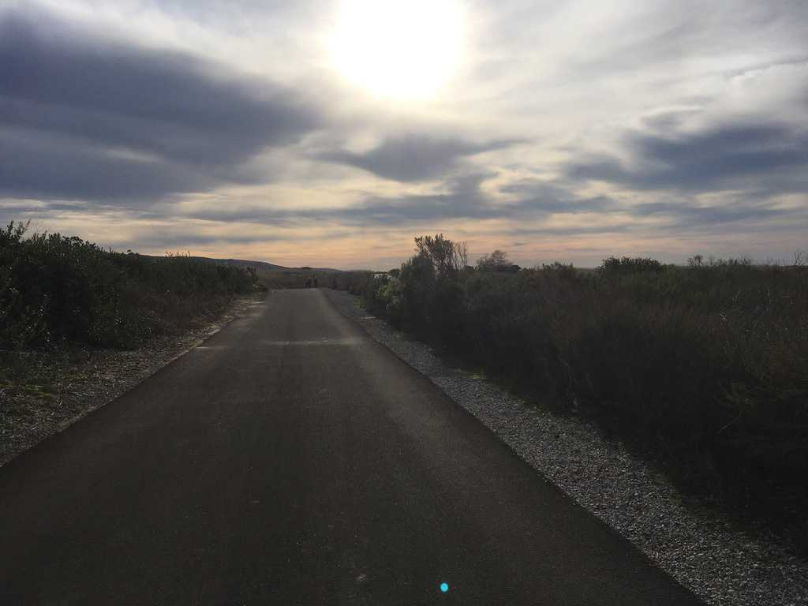

Fall 2019
I’m finally finished with the semester. Soon I’ll be heading home to see my parents, camp in Joshua Tree National Park, and soak in the California sunshine. The break is much needed, as is some perspective.
A lazy list of notable things:
I applied to the Masters in Complex Systems and Data Science program at UVM. This was a long process, mostly because I desire the kind of work that involves making connections with others, deep conversation, and facilitating personal transformation, but also because I was riddled with fear and self-doubt. All in all, I think I made the right choice given my current skillset and circumstances. Worst case scenario, I leave with well-developed computational skills, which would be beneficial if I wanted to pursue a PhD in Clinical Psychology, an option I am still considering for the future. Best case scenario I leverage my technical competencies to do social good. I’m fairly certain though that what brings me fulfillment is human connection and storytelling.
My relationship with my sister improved. It wasn’t bad or negative before, but we formed a deeper bond through the various 1- and 2-hour conversations we had about school, family, and life in general. Often it is with your siblings that you have the longest relationships of your life, so it’s gratifying to know that we’re both making an effort to nurture it. She’s matured a lot, and I’m proud of the person she is becoming.
I wrote a letter of recommendation. Someone I work with asked me to write her a letter of recommendation for graduate school. I was surprised at first, but when she told me why she had asked me, it made sense: I had taken the time to learn about her on a deeper level. I probed her brain; I talked to her about neuroscience and philosophy and sent her nerdy articles; I distracted her from doing actual work while asking about what she really cared for. This is a natural tendency of mine, especially with people who share similar interests. It’s fun to get to know people.
I built an app and learned MATLAB.
I learned how to make dough and samosas.
I dated and survived more shipwrecks of the heart.
I maintained my foreign friendships and made a new one with a person from Québec.
I camped with my friend Jess whom I hadn’t seen since I moved to Vermont 2 years ago.
I wrote some poems.
I became a runner.
And my favorite things I consumed:
Story of Your Life by Ted Chiang. Just read it. Chiang is a mastersmith of ideas and fiction.
I Wrote This Book Because I Love You by Tim Kreider. Probably the best book I read this year. Kreider writes several essays that illuminate the joys and sorrows of human relationships and living. He’s the charming guy you want to be around at a bar; he’s also the sort of friend you want to have for the rest of your life. This book is a close surrogate.
We Learn Nothing by Tim Kreider. More essays, though broadly focused. My favorite is Lazy: A Manifesto.
How to Fall In Love With Anyone by Mandy Len Catron. There’s a recurring theme here. Anyways, if you haven’t read the viral essay “To Fall In Love with Anyone, Do This” at the NYT, grab a cup of tea and do that now. Then read her book, which explores the various narratives that have lead to our modern definition of love.
You Can’t Have It All, a poem by Barbara Ras. For me, a reminder to let go of the things I can’t change, and to be grateful for what is.
The Glorious, Almost-Disconnected Boredom of My Walk in Japan
College Behind Bars by Lynn Novick. A powerful documentary highlighting the redemptive potential of education and people who are willing to give others a second chance. PLEASE watch this.
Delicate and Volcano by Damien Rice. Chilling performance by a true artist.
The Trapeze Swinger, a cover by Gregory Alan Isakov. Originally sang by Iron & Wine, I actually like GAI’s version better. The song itself feels like a parable.
Life is Short by Paul Graham. I revisit this essay often when I feel indecisive about things, or am riddled with thoughts of the future.
And life goes on. See you all in 2020.
